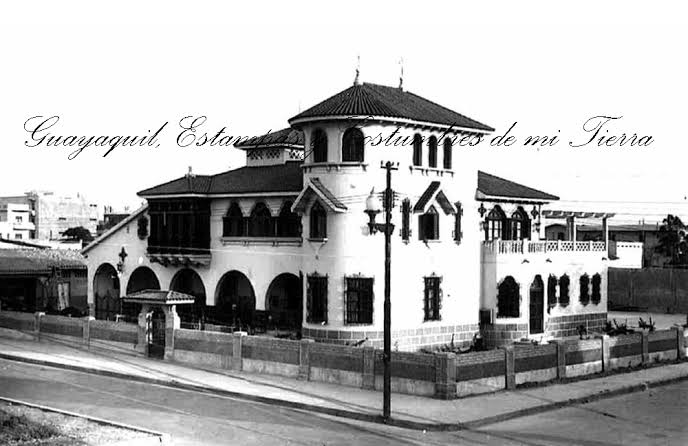
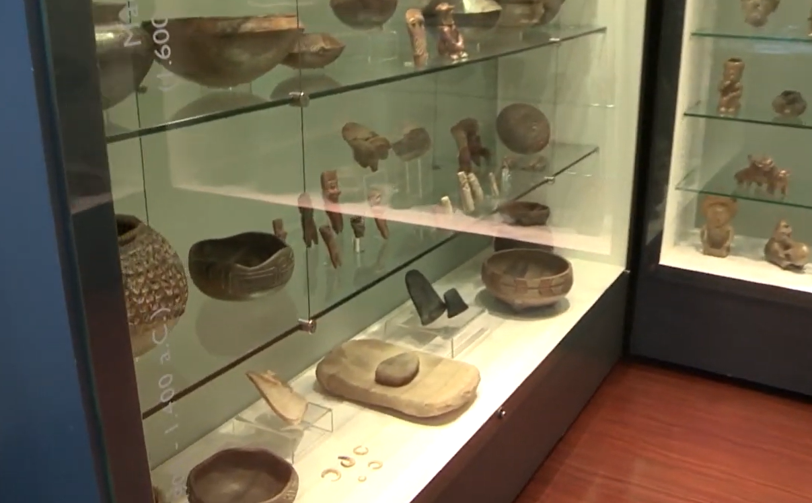
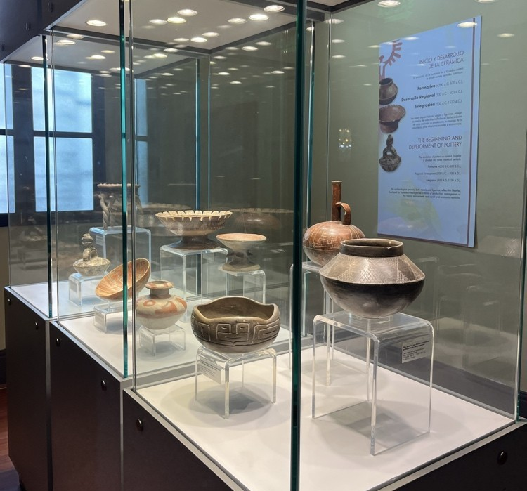

Patrimonio Arquitectónico
La emblemática Villa Rosa Herlinda, una joya de estilo andaluz de los años 40, sirve de hogar para este espacio cultural, brindando un entorno histórico inigualable en el corazón de Guayaquil.
El Museo Presley Norton es un espacio de acceso gratuito ubicado en la icónica Villa Rosa Herlinda, una casona de estilo andaluz construida en los años 40. Resguarda una invaluable colección de más de 8.000 objetos arqueológicos de cerámica, piedra y hueso que visibilizan la vida y cosmovisión de las culturas ancestrales de la costa ecuatoriana.

La emblemática Villa Rosa Herlinda, una joya de estilo andaluz de los años 40, sirve de hogar para este espacio cultural, brindando un entorno histórico inigualable en el corazón de Guayaquil.

Una de las colecciones más valiosas que resguarda el museo, mostrando las icónicas representaciones femeninas en cerámica que reflejan la cosmovisión y el arte de las primeras sociedades aldeanas.

Exposición de vasijas, cuencos y recipientes ceremoniales que muestran la evolución tecnológica y artística en el moldeo de arcilla por las culturas ancestrales de la costa ecuatoriana.
Entrada 100% Gratuita
Horarios de atención: Martes a Domingo de 09:00 a 17:00.
Ubicación: Av. 9 de Octubre y Carchi, Guayaquil, Ecuador.
Para consultas, visitas guiadas institucionales o información adicional sobre las exposiciones, puedes comunicarte con la administración del museo.
Correo electrónico: contacto@museopresleynorton.gob.ec
Teléfono: (04) 229-3410